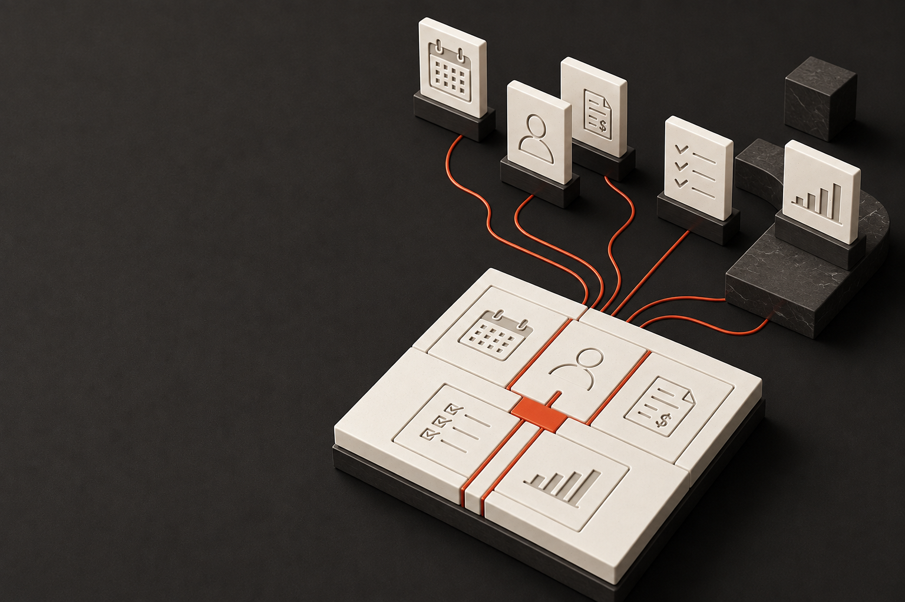

Ajuste al trabajo real
Las pantallas, la información y el seguimiento se desarrollan alrededor de los flujos de trabajo de la empresa.

Zuriel Sistemas · Perspectivas
De las licencias a los flujos
de trabajo y los resultados.
Qué está cambiando en el software empresarial y qué decisiones abre para quienes dirigen una empresa.
La transformación digital no tiene por qué consistir en sumar aplicaciones. Puede consistir en diseñar cómo debe funcionar la empresa y construir la tecnología que ese diseño necesita.
Durante años, contratar software por suscripción permitió acceder a capacidades que antes exigían grandes proyectos. Ese modelo sigue resolviendo necesidades importantes. Lo que merece una nueva mirada es su uso como respuesta automática a cada problema de la operación.
La presión sobre las licencias, el desarrollo asistido por IA y las nuevas formas de conectar sistemas amplían las alternativas. No determinan una solución única: devuelven a la dirección la posibilidad de elegir qué tecnología conviene a su forma de trabajar.
La pregunta deja de ser solamente «¿qué aplicación necesitamos?» y pasa a ser «¿qué trabajo debe quedar resuelto?».
Perspectiva de Zuriel. Este informe combina fuentes públicas, análisis propio y ejemplos ilustrativos. No presenta una predicción de desaparición del SaaS ni una promesa universal de ahorro.
SaaS significa Software as a Service: una aplicación que un proveedor opera y ofrece a través de internet. La empresa utiliza el servicio, normalmente mediante una suscripción. [1]
Su atractivo es comprensible: un servicio de correo, una herramienta de gestión de clientes o una plataforma de ventas pueden estar disponibles sin que la empresa tenga que desarrollar y mantener cada producto.
El proveedor se ocupa de la aplicación y sus actualizaciones. El cliente elige una oferta, configura sus opciones y organiza su uso. El cobro puede depender de usuarios, consumo, funciones o una combinación de criterios. SaaS no significa necesariamente cobro por persona.
La empresa obtiene acceso a un producto cuya evolución no controla por completo. Sus necesidades deben encajar en las funciones, extensiones y condiciones que ofrece el proveedor.
Eso puede ser suficiente para una necesidad común. La tensión aparece cuando una forma de operar propia requiere soluciones que el catálogo no contempla, o cuando varias herramientas deben coordinar un mismo trabajo.
Contratar puede ser una buena decisión. Convertir el catálogo de los proveedores en el diseño de toda la operación es una decisión distinta.
Los pasos que las aplicaciones no cubren se convierten en huecos: alguien debe trasladar información, avisar al siguiente responsable y comprobar que nada quede pendiente.
Transferir un registro es solo una parte del trabajo. También hay que saber quién lo recibe, qué debe hacer, cuándo se considera terminado y qué sucede si falta información.
Una integración puede resolverlo. Pero debe diseñarse para ese recorrido, probarse y mantenerse cuando cualquiera de sus extremos cambia.
Mensajes de confirmación, listas paralelas y reuniones para reconstruir el estado pueden convertirse en la forma habitual de sostener la operación.
El problema no es tener varias aplicaciones. Es que el equipo tenga que completar continuamente lo que el sistema deja sin resolver.
Digitalizar cada tarea no equivale a conectar el trabajo de principio a fin.
La reacción bursátil de comienzos de 2026 puso bajo presión al mercado de plataformas SaaS y abrió una pregunta: ¿cuánto vale vender acceso a herramientas cuando aparecen nuevas formas de producir software y ejecutar trabajo?
Caída mensual del índice de software S&P North American, según El Financiero / Bloomberg. La mayor desde octubre de 2008. [2]
Desde Chile, Omar Larré, cofundador de Fintual, analiza la amenaza que representan las alternativas creadas con IA para la capacidad de las empresas de software de sostener sus precios. Es una interpretación del mercado, no una medición de ahorro para cada cliente. [3]
En Brasil, Felippe Galeb, directivo de Olist, relata que su equipo creó una herramienta y automatizaciones que sustituyeron un SaaS de miles de reales mensuales. Se trata de un testimonio empresarial, no de un ahorro auditado o generalizable. [4]
Nuestra lectura: las alternativas propias merecen volver a la conversación estratégica. Una caída bursátil no decide qué sistema necesita una empresa.
Dato histórico de enero, no rendimiento a septiembre de 2026. Las cotizaciones expresan expectativas; no miden por sí solas la utilidad, los ingresos ni la continuidad de todos los proveedores SaaS.
SaS significa Services as Software: servicios convertidos en software. En Zuriel aplicamos este enfoque para transformar los flujos de trabajo de una empresa en un sistema desarrollado a su medida.
El proveedor ofrece un producto con funciones disponibles. La empresa contrata su uso, configura las opciones y conecta las herramientas que necesita.
La empresa define cómo necesita trabajar. Zuriel diseña y desarrolla las funciones que permiten completar ese recorrido, con acompañamiento para ponerlas en marcha y mejorarlas.
Por ejemplo, un flujo de atención puede reunir la solicitud, la asignación del responsable, los pendientes y el reporte final. El sistema se diseña para dar continuidad a todo ese trabajo.
El esfuerzo y la inversión construyen un sistema propio, que evoluciona según las prioridades de la empresa.
La IA aplicada al desarrollo puede facilitar la creación de funciones, pruebas y documentación. Pero una demostración rápida y un sistema confiable para operar una empresa son entregables diferentes.
El desarrollo asistido, junto con componentes reutilizables, permite explorar soluciones propias sin asumir que todo deba comenzar desde cero.
La comparación pertinente no es entre desarrollar y no hacer nada. Configurar varias aplicaciones, conectar sus datos y mantener sus integraciones también requiere trabajo técnico.
DORA 2025 describe la IA como un amplificador de las fortalezas y debilidades de la organización. Las herramientas no sustituyen un sistema de trabajo bien preparado. [5]
METR señaló en febrero de 2026 que veía indicios de mayor aceleración, pero que los sesgos de selección de su nuevo estudio impedían estimar con fiabilidad su magnitud. No existe un porcentaje de productividad que se pueda trasladar sin más a cualquier proyecto. [6]
La ventaja no está solo en producir código. Está en convertirlo en una operación que el equipo pueda sostener.
Diseñar desde la operación significa definir qué inicia el trabajo, por qué etapas pasa, quién interviene y qué evidencia confirma que terminó.
¿Qué ocurre si falta información? ¿Quién recibe una demora? ¿Cuándo puede continuar el trabajo y cuándo necesita una decisión humana?
Estas preguntas definen las funciones necesarias. La elección de una aplicación, una integración o un desarrollo viene después.
Una arquitectura a medida no exige sustituir todo. McKinsey describe vías incrementales, transformaciones amplias y combinaciones por áreas, según el contexto y el beneficio esperado. [7]
El criterio es que las piezas formen un recorrido coherente y que los datos mantengan un significado compartido entre etapas.
La IA y los agentes pueden participar donde aporten valor. El centro es el flujo de trabajo, no la tecnología elegida para cada paso.
Flujos a medida, infraestructura propia y capacidad de evolución: estas son las ventajas que buscamos materializar en cada proyecto.
El equipo crece
Conexiones entre aplicaciones
Más usuarios, más cuotas
El equipo crece
Funciones de un mismo sistema
Sin cuotas por persona
Las pantallas, la información y el seguimiento se desarrollan alrededor de los flujos de trabajo de la empresa.
Un sistema sobre infraestructura bajo titularidad de la empresa, con accesos, documentación y derechos sobre el desarrollo definidos en la entrega.
El equipo puede crecer sin cuotas por usuario. La infraestructura se dimensiona según el uso, con costes de alojamiento, mantenimiento y servicios externos.
Las nuevas necesidades se convierten en desarrollos específicos, con responsables, continuidad técnica y una forma clara de priorizar mejoras.
No hace falta elegir entre «todo SaaS» y «todo propio». Hace falta decidir qué papel debe cumplir cada pieza dentro de los flujos de trabajo de la empresa.
La herramienta cubre bien una necesidad común, el equipo la utiliza y sus condiciones son aceptables.
Pregunta clave¿Qué perderíamos al sustituirla?
Las capacidades ya existen, pero falta continuidad entre datos, responsables o estados del trabajo.
Pregunta clave¿Qué debe pasar de una etapa a la siguiente?
Hay una necesidad propia que las opciones disponibles no cubren de forma adecuada o controlable.
Pregunta clave¿Qué capacidad necesitamos desarrollar?
Empezar por un flujo relevante y delimitado permite validar el diseño antes de ampliar la transformación.
Acompañamos a empresas que quieren conectar su operación con tecnología diseñada desde sus necesidades y sus flujos de trabajo.
Trabajamos con quienes realizan y dirigen la operación para definir el recorrido del trabajo, los responsables y el resultado esperado.
Esa definición orienta qué conservar, qué integrar y qué desarrollar. El objetivo es que la tecnología responda a la empresa y que el equipo pueda apropiarse de la nueva forma de trabajar.
Desarrollamos por etapas, revisamos con el equipo y preparamos la puesta en marcha. La formación, la documentación y la continuidad son parte de la conversación desde el inicio.
Este informe presenta nuestro criterio, no un alcance cerrado. Cada proceso de transformación necesita una propuesta concreta.
Edición de septiembre de 2026. Fuentes consultadas el 4 de septiembre de 2026. Los datos conservan su fecha y ámbito original; las recomendaciones y los diagramas son elaboración de Zuriel.
Las fuentes no patrocinan ni avalan este informe. Los ejemplos no representan clientes o resultados de Zuriel. La imagen de portada es una representación conceptual generada con IA. Los enlaces de las referencias están disponibles en las versiones web y PDF.